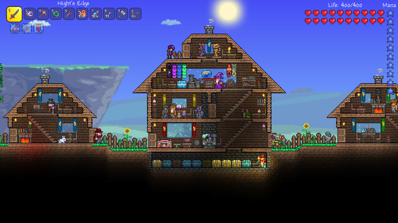

私の好きなゲームのTerrariaテラリアについて紹介します。
ボスを倒して何回もつよくなる！
Terrariaには18体のボスが存在していて、そのどれを倒しても自分を強化するアイテムを得ることができます。
そのためボスを倒して自分を強化して次のボスを倒して...ということを繰り返す作品になっています。
2D版Minecraftと呼ばれることもありますが、どちらかというとボスを倒すことに重きを置いた作品になっており、ハクスラ好きやソウルライク好きにも刺さるゲームになっています。
アップデートによるコンテンツ追加！
本作は買い切りの作品となっているのですが、定期的に運営がアップデートを行っており、その度にコンテンツが追加されます。Steamで1200円で購入可能で（※Steamのセールでは500円で購入可能）、驚きのコスパになっています。
有志によるModコンテンツが充実!
リリースされてからそこそこ長いゲームというのもあり、Modコンテンツが充実しています。
Modの中にはゲームを便利にするものからコンテンツを大きく追加するものもあり、私はCalamityModというコンテンツ追加Modが大好きです。
ここまで紹介してきたTerraria、皆さんも遊んでみませんか？